Animais Fabulosos
- 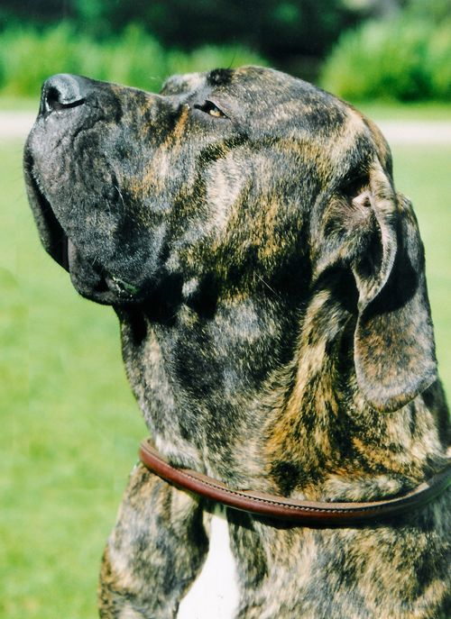
- 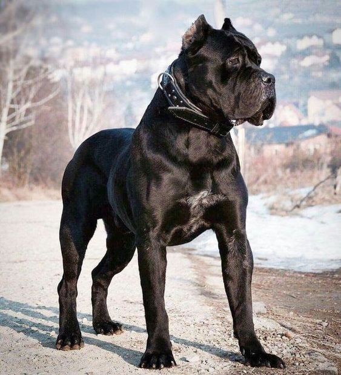
- 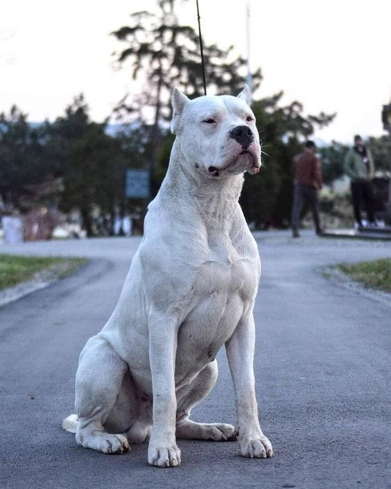
- 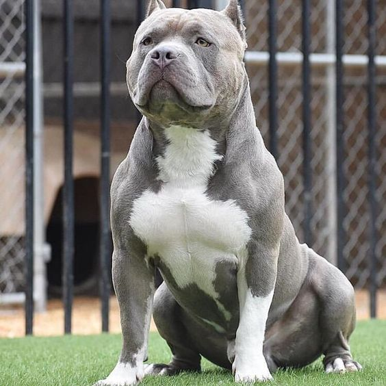
- 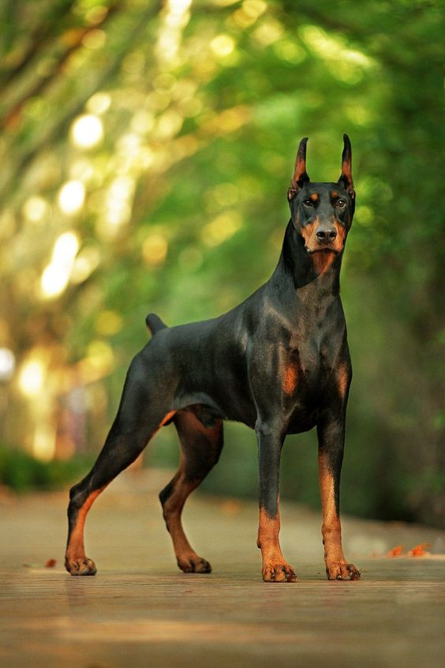
-

Fila Brasileiro
Famosa por ser uma ótima raça de cão de guarda, o Fila brasileiro é extremamente corajoso e não é tão chegado a estranhos. Por isso, nada de chegar com intimidade com esses cães. Com seus tutores, o cão costuma ser muito apegado, dócil e fiel.
Também esta raça é conhecida por suas habilidades de rastreamento e agressividade, qualidades que podem ser valiosas em um cão de caça.
Para quem gosta de se exercitar ao ar livre, o Fila Brasileiro é o cão ideal. Com energia de sobra, esse cão precisa de uma boa dose diária de exercícios e brincadeiras.
Cane Corso
O Cane corso é um nome que vem do latim e significa “cão guarda-costas”, consegue imaginar o porquê? É que essa raça ótima quando o assunto é proteção, o que juntando ao fato deles serem muuuito fiéis aos seus tutores, rendem um perfeito cão de guarda. Outras qualidades notáveis que o ajudam ainda mais são a sua inteligência, agilidade e a vontade enorme de agradar os seus humanos.
Seu pelo brilhante e sua postura imponente costuma chamar a atenção. Mas tudo não passa do mais puro charme. Mais amoroso do que bravo, esse grandalhão costuma roubar o coração de todos e ganhar facilmente o status de membro da família.
O Cane Corso é um cão do tipo Mastim, conhecidos por serem cães de porte grande e cuidadores de rebanhos e propriedades. A raça surgiu na Itália e descende de animais utilizados nas batalhas do Império Romano.
Dogo Argentino
O Dogo Argentino, também conhecido como Mastiff Argentino, é o que poderíamos definir como um tanque blindado em forma de cachorro! A raça foi criada no final de 1920 por um cirurgião argentino chamado Antonio Nores Martinez.
Sua ideia era desenvolver uma raça valente e forte o suficiente para caçar animais grandes, como javalis e pumas. Porém, ele também precisaria ter um instinto protetor e ser fácil de se treinar.
Desde então, os Dogos conquistaram um lugar especial na cultura argentina, tanto que até mandaram erguer uma estátua em sua homenagem.
Pitbull
O Pitbull, ou melhor dizendo, o American Pitbull Terrier é uma raça que divide opiniões. Afinal, existem aqueles que conhecem o animal e sabem que se trata de um cão muito companheiro e leal.
Mas também há aqueles que acreditam que o Pitbull deveria ser extinto em razão das inúmeras histórias envolvendo a agressividade desta raça
Independentemente de você amar ou odiar o Pitbull, uma coisa é certa: esses cães são sim bastante confiáveis, são ótimos com crianças e simplesmente adoram pessoas.
Doberman
Encontrar com um Doberman em um beco escuro e sem saída, com certeza, não é o desejo de ninguém. Afinal, essa raça possui uma aparência assustadora e é considerada por muitos como um cão pertencente ao time dos “malvados”.
No entanto, mesmo com sua cara de bravo, um Doberman não é um cão agressivo por natureza. Ele pode ser um excelente cão de guarda e também um companheiro fiel para toda a vida.
“Não julgue o livro pela capa” é o tipo de ditado que cabe bem para um Doberman. Você pode se surpreender com a lealdade desse cão, especialmente se você construir um vínculo com o seu pet. Se você pensa em ter um Doberman para chamar de seu, é bom conhecer todas as características dessa raça!
Rottweiler
O Rottweiler é, digamos assim, uma raça intensa! Por ser um cão forte, cheio de energia e com um grande instinto protetor, ele precisa de cuidados e treinamento de um dono experiente.
Aqueles que tratarem seu Rottweiler com a devida consistência encontrarão um cão amigo, amoroso, fiel e muito inteligente.
Ele tem fama de ser um cão agressivo. Porém, o que nem todo mundo sabe é que, por trás dos seus latidos imponentes e da sua cara de mau, existe um peludo extremamente protetor, amoroso e fiel. O Rottweiler foi originalmente criado para ser um cão de trabalho, o que explica a sua força e robustez até hoje. Em tempos mais antigos, sua principal função era conduzir o gado e até puxar carroças. Posteriormente, o Rottweiler acabou se destacando como um cão policial, participando de operações e pelotões da polícia pelo mundo todo..
BEM ESTAR
- Qual a idade dos animais?
- Para saber qual a expectativa de vida de um cachorro, há muitos fatores que devem ser levados em consideração, Cada raça tem sua própria expectativa de vida a média da expectativa de vida é de 12 a 15 anos..
- Cachorros são capazes de tomar decisões a partir da emoção de humanos?
- Uma pesquisa feita pelo Instituto de Psicologia da USP junto com a Universidade de Lincoln, no Reino Unido, revelou que os cachorros são capazes de tomarem decisões com base nas expressões faciais das pessoas.
- Por que cães gostam de brinquedos barulhentos?
- Apesar de terem sido domesticados há muuuuuito tempo, os cães ainda guardam alguns hábitos de seu instinto. Um deles é o prazer da caça, mas calma que não estamos falando de nada como uma selvagem caça de lobos, mas sim o prazer de ter brinquedinhos que estimulem esse instinto.
- Como cuidar da saúde do seu pet em cada fase da vida?
- Como é bom ter um pet em nossas vidas, não é mesmo? Dar amor e carinho são cuidados essenciais sempre, mas também precisamos saber como cuidar da saúde do pet em cada fase da vida, Quando adultos, os pets estão bem desenvolvidos e com a saúde em sua melhor fase. Mas, prevenção é sempre a palavra-chave, seja qual for a idade! Por isso, o primeiro ponto a dizer aqui é sobre os check-ups anuais no veterinário para saber se está tudo certo com a saúde do seu peludo
- 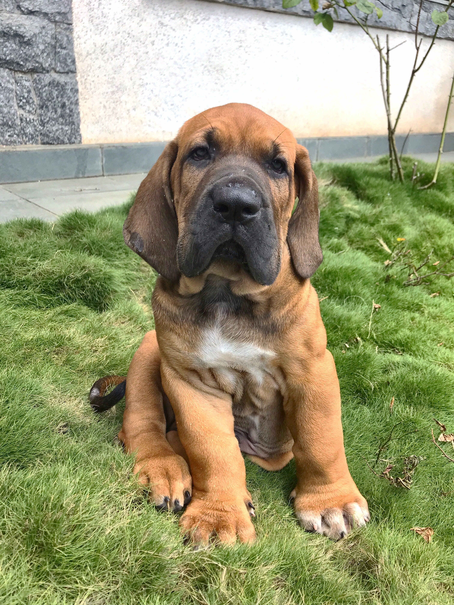
- 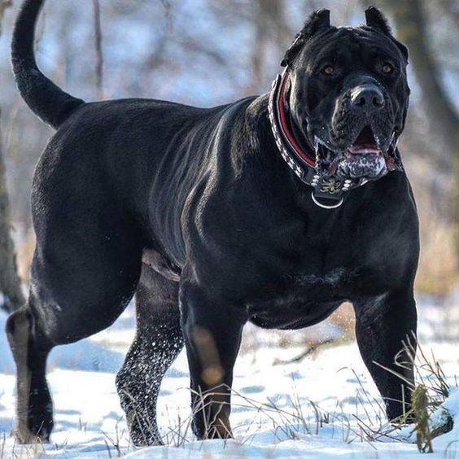
- 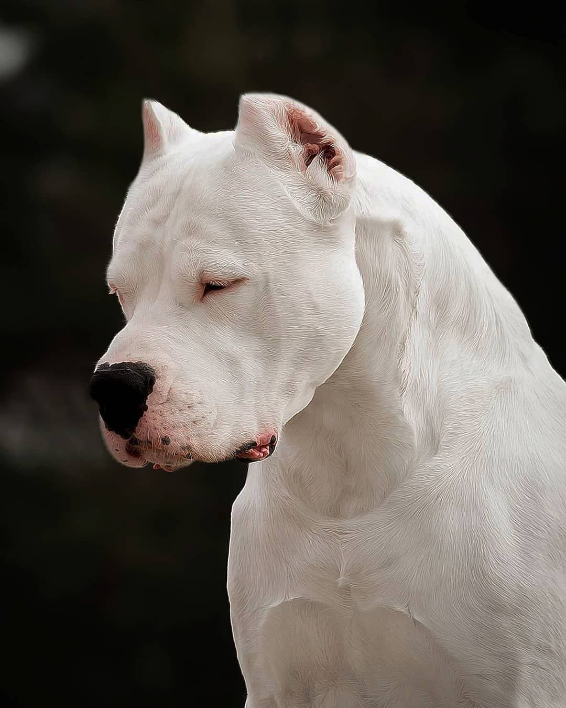


- 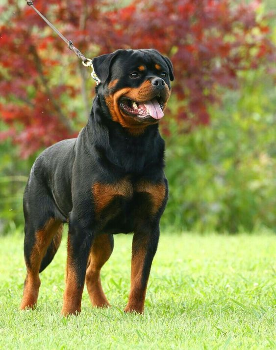
- 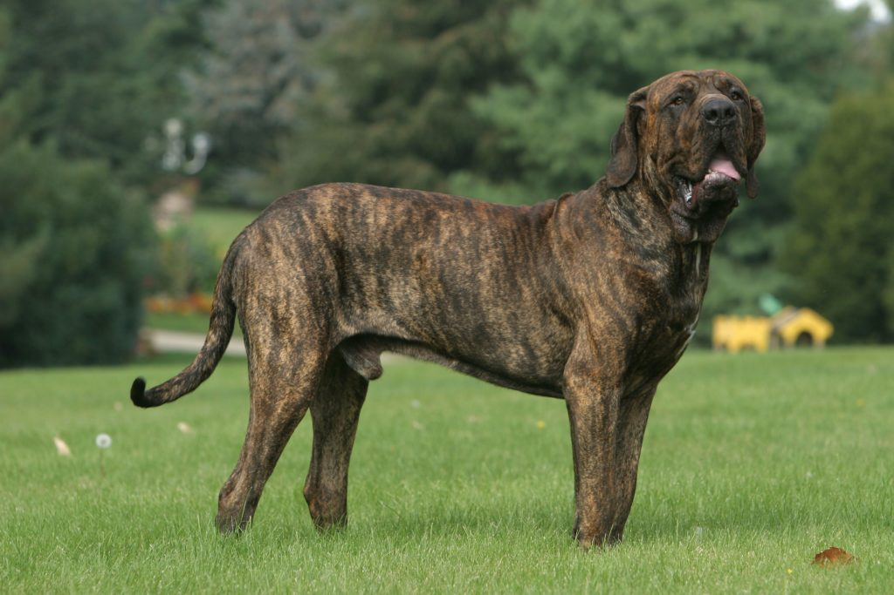

- 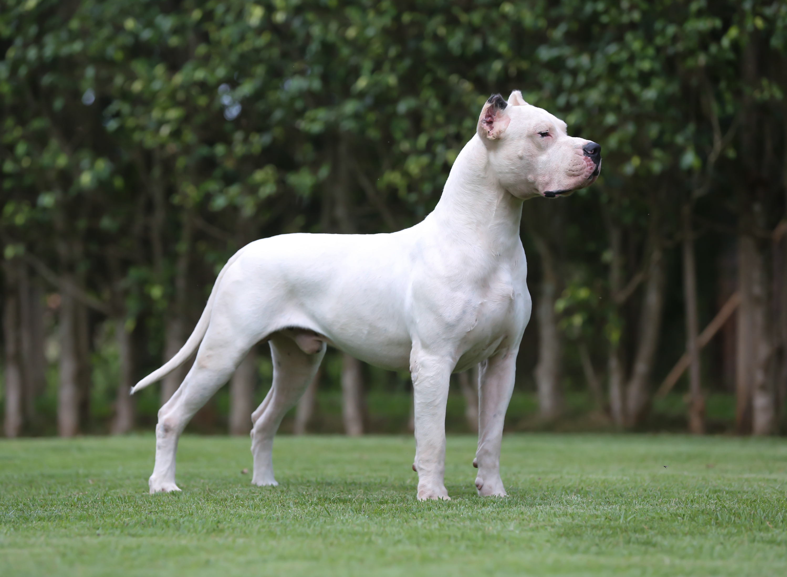

- 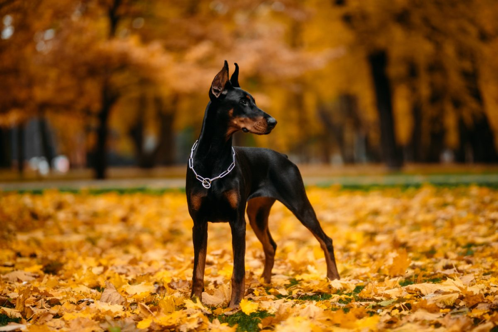

Números
população de cães
500 MilhõesAbandonados no Brasil
30 MilhõesNascem por dia
117 MilRaças
Existem mais de 700 raçasVivem
Media 10-14 AnosQuanto eles ouvem
10 vezes mais que os humanosContato
- williamporto0@gmail.com
- +55 (511) 99019-5441
- Rua Rui Barbosa, nº
- Guaiba - RS
- Doe 0 Bitcoin para nos ajudar
- Seg à Sab das 6 às 22